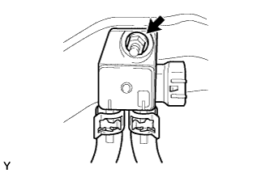

ДИФФЕРЕНЦИАЛЬНЫЙ ДАТЧИК ДАВЛЕНИЯ > СНЯТИЕ |
| 1. СНИМИТЕ ПРИЕМНУЮ ТРУБУ В СБОРЕ |
| 2. СНИМИТЕ ПЕРЕДНИЙ ТЕПЛОЗАЩИТНЫЙ ЭКРАН ПОЛА № 1 |
Отверните 3 гайки и снимите передний теплозащитный экран пола № 1.
| 3. СНИМИТЕ КРОНШТЕЙН ДАТЧИКА № 1 (для моделей с автоматической трансмиссией) |
Открепите 4 зажима и отсоедините разъем.
Выверните болт, отверните гайку и снимите кронштейн датчика № 1.
Выверните болт и снимите кронштейн датчика.
| 4. СНИМИТЕ КРОНШТЕЙН ДАТЧИКА (для моделей с механической трансмиссией) |
Расцепите зажим и отсоедините разъем.
Выверните болт и снимите кронштейн датчика.
| 5. СНИМИТЕ ДИФФЕРЕНЦИАЛЬНЫЙ ДАТЧИК ДАВЛЕНИЯ В СБОРЕ |
|  |
Отверните гайку и снимите дифференциальный датчик давления с кронштейна датчика.
Снимите воздушный шланг выпускной трубы № 6 и воздушный шланг выпускной трубы № 7 с дифференциального датчика давления.